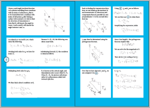
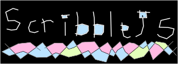
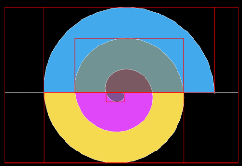
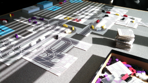
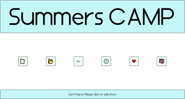

| Project Name | Image | Description | Links |
|---|---|---|---|
| Computer Graphics: The Graphic Novel. |  | We are writing a Graphic Novel to explain the fundamentals of Computer Graphics using words and illustrations. All of the concepts will be communicated using diagrammatic language as much as possible in lieu of mathematical symbols. | |
| Scribble.JS |  | Scribble.Js was originally developed for the Wick project and it allows people to easily create 2D planar meshes, which will be very useful for constructing prescise images for the Graphic Novel Project and it has also been used to represent road topologies in our Transportation Engineering work. | Info. Demo. |
| BDS.js |  | The Bryce Data Structures Library is a collection of useful algorithms and data structures for interactive visual work on the internet. It is used in quite just about all of my recent work. It is useful to me, because it allows me to have a high degree of control when doing Computational Geometry in Javascript. | Link. |
| Beam Tracer | Starting in the Summer of 2016, Bryce been working on a 2D Beam Tracer, which will be used to construct illuminated SVG files. | Demo!. Code. | |
| Illustrating Geometry |

|
In collaboration with Keenan Crane, we've been working towards developing algorithms for extracting useful SVG friendly curves from geometry representations. This work is meant to bridge a feature gap between 3D modeling programs and 2D illustration programs. Thus far, we've found some practical solutions to finding sillouette curves. [Image belongs to Keenan Crane.] Bryce has planned to spend time during the Summer of 2017 continuing this work. | PDF. |
| Hump Yard |  | Hump Yard is a Board Game about Rail Classification Yards. This board game is all expressing the fun of algorithmic thinking and data structure design to the world. | [No Link Yet]. |
| Summers Camp |  |
This was one of my first tool design projects. This was an ambitious attempt to improve the lives of linear algebra students through a tool that allowed them to easily perform macroscopic operations like row reducing instead of performing arithmetic. I stopped working on it in the Fall of 2013, because I realized that I needed to aquire a lot more background knowledge on designing programs for people and I needed to start writing programs that work on the internet, because writing programs for desktops is becoming outdated for tools like the ones that I am making. |
Link. Download. |
| Name |  |
Description | Link. |
| Name | |
Description | Link. |